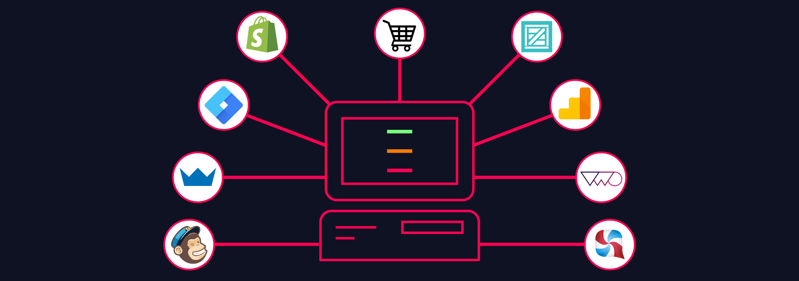

Beyond Clicks: How Creative Testing Supercharges Your Facebook CTR
In the fast-paced realm of digital marketing, achieving a high Click-Through Rate (CTR) on Facebook is a game-changer. Even though CTR isn’t always correlated with good Cost per Conversion, all things being equal, improving your CTR will improve your results. Creative testing serves as the secret sauce. It systematically explores various facets within your ad campaigns, a process akin to refining your artistic strokes. The goal? To discover what resonates most profoundly with your audience. This comprehensive guide will navigate you through the world of Facebook CTR enhancement via creative testing, offering actionable strategies, real-world illustrations, and practical tips. If you're ready to harness the full potential of your Facebook ads and supercharge your CTR, read on.
Read More →
Are Facebook Ads Still Worth It in 2022 and 2023?
Although Facebook isn’t what it once was, and probably never will be again, it still has an enormous number of users, many of whom are your potential customers.
Read More →
The Poker Player's Guide to App Tracking Transparency
We see huge opportunities within Q4 for businesses that successfully adapt now, who will be uniquely positioned to have an edge against other brands that evolve at slower rates. The key here is to get ahead of the crowd before everyone else figures it out.
Read More →
How To Advertise On Facebook: Demystifying How Facebook Ads Work
Facebook always wants to make more money off ads. Here’s an insider’s guide on how to advertise on Facebook & drive performance without wasting your budget.
Read More →
How to Use Data-Driven Creative Testing for Better Strategy in Marketing
Read More →
Facebook B2B Paid Social Trends Report
How do you know if your Facebook ads are performing better than average or below average? Take a look at our growth benchmarks so you can find out for yourself.
Read More →
The Importance Of Target Audience Testing In Marketing With ATT
Have you let Facebook do your target audience testing for you? With app tracking transparency, it’s imperative you learn how to use audience testing to your advantage.
Read More →
What is App Tracking Transparency And How Is It Affecting Your Facebook Ads
What does the new App Tracking Transparency mean for your company and your marketing campaigns? Find out everything you need to know about ATT and how it affects you.
Read More →
How To Run Successful Advertising On TikTok, Quora, And Snapchat
Need new ways to market your business? Advertising on TikTok, Quora, and Snapchat may just be the future. Here’s how to create successful creative marketing campaigns.
Read More →
A Quora Marketing Guide: How To Use Quora Questions And Answers In Your Marketing Strategy
“A Quora Marketing Guide: How To Use Quora Questions And Answers In Your Marketing Strategy” is a guest post from Ksenia Larina, Content Strategist at …
Read More →Hashtags: How (And How Not) to Use Them
I believe there are two types of people in the world.
#ThoseWhoUseRidiculouslyLongHashtagsLikeThis
And those who refuse to use any.
Are either of them wron…
Read More →
Meet Faveeo’s ‘Essentials’: A New Marketing Channel For IT Innovation
Companies in the IT innovation space need a B2B channel that will cut through the noise and get their content in front of a relevant audience. If you’re hu…
Read More →
The Social Video Formula That Boosts Engagement: How To Create Videos For Social Media
“The Social Video Formula That Boost Engagement: How to Create Videos for Social Media” is a guest post by Patrick Foster, and long-time eCommerce Consulta…
Read More →![[Case Study] How Facebook Lead Ads Decreased Our Cost Per Lead by 80%](../6098e41066be8b2b7cb437cd/60f552bf16321e1c8eacf3a6_facebook-lead-ads.png)
[Case Study] How Facebook Lead Ads Decreased Our Cost Per Lead by 80%
Special thanks to Rob Tutty at Driftrock for his help and guidance in getting Facebook Lead Ads set up for Ladder! We have a culture of learning from the b…
Read More →
7 eCommerce Lookalike Audiences That Are Worth Testing
7 eCommerce Lookalike Audiences That Are Worth Testing is a guest post by Elad Levy, Head of Growth at Fixel – a tool specializing in building powerful aud…
Read More →
50+ Ad Copy Examples Guaranteed To Increase Clicks
It’s a cheerleader. Not a cheerleader for products, but one for that voice inside your head. The one who’s always saying things like, “damn, I should...
Read More →
What Marketers Can Learn From The Most Effective Russian Ads from the 2016 Election
We’ve all heard reports about how Russian operatives created and distributed ads and posts on Facebook between June 2015 and August 2017....
Read More →
How to Write Copy That’s Optimized for Conversion
Read More →
Quora Growth Hacks (Part 1): A Guide To Get You Started
If I have a question, I’ll likely turn to three reputable sources. My mom, Google, and Quora (in that order). Quora is one of the largest question-and-answer websites where visitors can gain quality insights, share their expertise, and find valuable answers for pretty much any topic. This makes it a perfect platform for entrepreneurs and content creators to share their knowledge and expertise, drive traffic to a website or blog, and generate high-quality leads.
Read More →
How to Use Facebook’s Dynamic Ads For Quality Blog Traffic
You went to a lot of effort to design your blog and write each blog post, but how much time have you put into promoting it? Sure it’s going out in you...
Read More →
How Meme Knowledge is Essential For Your Marketing Growth
“How Meme Knowledge is Essential For Your Marketing Growth” is a guest post written by Claudia Jeffrey, a Content Strategist at Crowd Writer. She also...
Read More →
How to Use Social Listening to Improve Customer Experience
“How to Use Social Listening to Improve Customer Experience” is a guest post written by Adela Belin, a content marketer and blogger at Writers Per Hou...
Read More →
Twitter Follower Growth: The Ultimate Guide to More Followers and Engagement
*This guest post on organic Twitter follower growth is fromKas Szatylowicz. She’s a social media manager and outreach coordinator atNightwatch— a sear...
Read More →
Viral Marketing: How to Create a Viral Social Media Marketing Campaign
“Viral Marketing: How to Create a Viral Social Media Campaign” is a guest post written by Hanson Cheng
You might have found that global events have d...
Read More →5 Ways To Make An Animated GIF (Without Photoshop!)
Author’s Note: This post on how to make an animated GIF (without Photoshop) was updated to include information on how to add GIFs to Facebook, Twitter...
Read More →
Facebook Ad Support • Your Ultimate Marketing FAQ Guide
Get Facebook ad support & answers via our ultimate Facebook FAQ guide – covering ad sizes, approvals, spending, strategy, settings, culture, polit...
Read More →
Reddit Ads: We Spent $250. Here's What We Learned
This is a guest post on Reddit Ads by Alex Berman of Experiment 27. We worked with Alex to test out Reddit’s advertising platform. Below are the resul...
Read More →
Retargeting Ads: What They Are — And 12 Brilliant Ways to Use Them
Done right, retargeting ads are an effective method of re-engaging inactive users, upselling current customers, and converting website visitors into p...
Read More →
Setting Up Your First Twitter Advertising Campaign – A Step-by-Step Guide
First, it was Facebook Lead Ads.
Then, it was Google AdWords.
And today, it’s Twitter ads
This week, I launched my very first Twitter advertising camp...
Read More →
Create your own ad spend calculator with Google Data Studio
Keeping ad spend under control is essential if you have a limited budget. Even if you don’t, you probably want to appropriately manage it and have a f...
Read More →
How to use the Facebook Pixel
These days, running your own ad campaign isn’t rocket science – in big part thanks to tools like the Facebook Pixel.
Well-known ad platforms suc...
Read More →
What Is Video Marketing? Benefits, Challenges, and Best Practices
Video is a powerful marketing medium that is not used to its full potential by a lot of brands. 86% of consumers want to see more videos from business...
Read More →
Test of the Month: How Ladder Launched a Facebook Video Ad With an 11% CTR
We’ve launched thousands of marketing tests, and let’s be honest: we’ve seen some winners and a few losers (like Reddit Ads).
But we want to start hi...
Read More →
10 steps to grow your mobile app on Facebook
A friend of mine recently asked me how to effectively promote a mobile app on Facebook Ads, what are the best practices, and what to do if they haven’...
Read More →
Facebook Growth Hacks: Actionable Tactics for B2B Lead Generation
Although LinkedIn is the platform of choice for many B2B marketers, Facebook is a perfect platform not only to build brand awareness but also convert ...
Read More →
2 Ways To Find Your “Super Fans” Using Facebook Custom Audiences
Any marketer can use Facebook Ads to find the people who may benefit from their products and services.
But how do you identify people whoare more like...
Read More →
8 Essential Tools You Need to Grow a Booming eCommerce Business
At Ladder, we’ve had the pleasure of working with dozens of eCommerce businesses. Every day we hear problems that founders and marketers face in build...
Read More →
Here’s How We Drove Newsletter Growth Using Facebook Lead Ads
Earlier this summer, we shareda case study on how Ladder used Facebook Lead Ads campaigns to decrease our cost per lead and cost per qualified lead by...
Read More →
Mastering creative testing in social media
Even with the boom of social media, where testing has become increasingly frictionless, creative testing has actually become more complex. The main is...
Read More →
Instagram Growth Hacks: Build Your Brand Organically
If you’re here to read about so-called Instagram growth hacks that will earn your page thousands of engaged followers in less than 48 hours by using b...
Read More →
Facebook Live: The Holy Grail For Organic Reach
In terms of social media marketing, organic reach is at the top of the food chain. It’s free promotion. So, the potential ROI is massive.
But, you hav...
Read More →
How to structure your Facebook ad account for creative testing
In the previous blog post, we learned about some of the problems and some best practices related to creative testing in social media. In this post, we...
Read More →
Using Instagram to Drive Conversions and Grow a Community
NOTE: Instagress is now a defunct service, as of May 2017. Some other services that have similar functionality still exist. However, the general conce...
Read More →
5 Cheap and Effective Ways to Run Facebook Ads A/B Tests
You know how important A/B testing is — you’ve read all the case studies about millions of dollars made and maybe had shocking results of your own. Yo...
Read More →